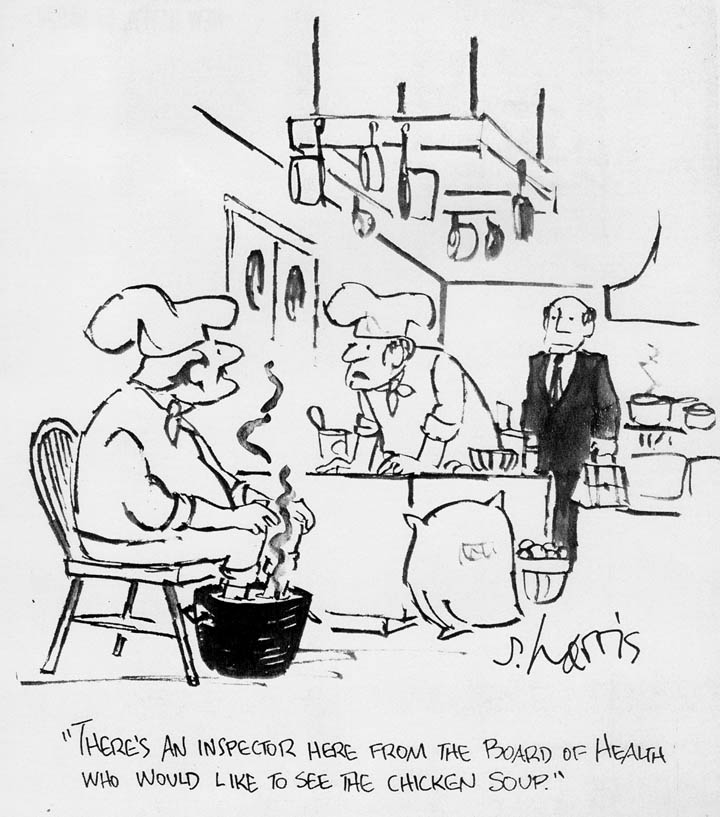

READER COMMENTS
LAWRENCE BERG, TUCSON, AZ.:
My grandmother also made chicken soup with the unborn chicken eggs and the egg bag that they came in. I devoured them both. In the late 1930's, every Friday afternoon, my Grandfather and I went to the Farmer's Market in Dayton, Ohio. He would pick out two live laying hens out of the cages on display. The hens would be killed hung up side down for a few minutes and then dipped into a big pot of boiling water to loosen the feathers. About half the feathers would be removed by chicken pluckers sitting around a large tub that was catching the feathers. When the chickens arrived at my Grandmother's kitchen, my job was to remove the rest of the feathers and clean out the stomach. My grandmother then singed the chickens over the gas burner on the stove to remove the tiny hairs on the wings, salted the chickens to remove all the remaining blood, and put them in the pot. She stuffed the egg sacks with a mixture of chopped beef, minced onions, salt and pepper and that also went in!
to the soup. About 25 years later, I found a farmer at the farmer's market in
Georgetown (Washington, DC) who was bringing 1# paper trays of unborn eggs and egg sacks to market. Following my Grandmother's recipe, I also stuffed the egg sacks, steamed them, put them in the refigerator. Once cold, sliced them, arranged them on a tray,put toothpicks in them, sprinked a little soy sauce on them (my inovation) and served them with cocktails. Got rave reviews. People begged me to tell them were I got such delicious "casings" for my home made sausage. I never told until now.
LESLIE S., Creve Coeur, Missouri: I can remember as a young child in the late 50's and early 60's that every Friday my grandmother would make chicken soup. This was a mainstay in our special Sabbath meal. The special treat that would often accompany the soup were the eggies, those little golden yellow marble sized balls of unborn chicken eggs. As the only grandchild I was always asked if I wanted any of the eggies and as I remember I never turned them down.
§ Home § Search § SoupTales § Any comments?
{kind=link}
Sidney Harris's Grandmother's Chicken Soup with Unborn Egg Yolks
(with great thanks and appreciation to reknowned cartoonist Sidney Harris and Dutch hydrologist Wiebe van der Molen )
(Please click on cartoon to enlarge! Copyright © 1998 by Sidney Harris. No reproduction other than for personal use without written permission. Reprinted here with permission of Sidney Harris.)
This is a story as much about lost American soup traditions as it is about my own ignorance and about international problem solving on the Web.
It all began when I contacted Mr. Harris, as part of my Faves of the Stars! effort, and asked him if he would contribute his favorite soup. He was kind enough to respond with what he said was not necessarily his favorite soup, but that "certainly was unique and memorable." To wit, a chicken soup made many years ago by his grandmother in Brooklyn "that contained tiny eggs (yolks only)...and I very much enjoyed these little round yolks."
Tiny egg yolks in soup? I had never heard of such a thing...nor did anyone else I asked...nor did the combined food resources of two different libraries.
I suggested the possibility of farfel, small egg-rich dumplings also known as "egg barley"???
No, Mr. Harris said, "they were definitely eggs--but, as I mentioned, appeared to be only yolks. They varied in size, and were close to the size of a marble. There would be a few in a bowl of soup--3 or 4. It's possible she bought live chickens, and found these very young eggs in the bird."
At this point I turned to the Web, ultimately locating a Dutch hydrologist who'd graduated in Agricultural Engineering in 1949, helped drain an inland sea in the Zuiderzee polders for agriculture, taught at Wageningen Agricultural University in the Netherlands until retirement--and along the way built a henhouse and began raising and observing chickens.
Oh yes, he assured me, tiny yolks in chicken soup are entirely possible, so long as the chicken is freshly slaughtered. One simply removes the chicken's ovary and releases the cache of unborn egg yolks into the simmering broth.
Here is how he described the process: "Producing an egg is similar to making a car. You start with something, put it on a conveyor belt and add all things that are needed. So does the hen. She starts with the yolk. She has thousands of very small ones and some of them start growing. So it looks like a bundle of grapes, with a big one for tomorrow, a smaller one for the day after and a still smaller one for the next day (but she might take a day off now and then). Old granny obviously slaughtered a chicken, took the ovary out and used the unborn yolks for her soup. Nothing wrong with it.
"...When the yolk is fully grown, it is released from the ovary and falls into a large funnel at the beginning of a long tube, the oviduct. This acts as a conveyor belt: egg white is added, then the chalaza (the two wound-up strings at either end of the yolk) and finally the shell. Then it has come nearly at the end of the journey, but there it is halted for a long time. Adding white does not take much time, perhaps 1-2 hours, but making the shell lasts about 24 hours. When finished, but still inside, it is already hard. It is the same material as limestone: calcium carbonate.
"...Immediately after laying, a new yolk is released. But the process takes longer than a day, and when the egg comes around noon, the animal takes a day off and starts very early the next. A well-behaved chicken, therefore, lays some 6 eggs per week."
My teacher also sent me to a University of Georgia poultry site that graphically showed all those little unborn eggs in a chicken's ovary. If you aren't squeamish, click HERE to take a gander.
{kind=link}
If that gets you even more interested, please read "Laying an Egg" at http://www.afn.org/~poultry/egghen.htm.
So what about the final recipe? Here it is--and with a reasonable facsimile substitution for the unborn eggs for those of us who don't slaughter our own chickens. I found this "egg ball" recipe in a 19th century American cookbook.
- 1 4-5 pound stewing hen, with gizzard, heart, neck, and feet (not the liver, which would make the soup bitter)
- 1 onion
- 1 large carrot
- 2 stalks celery, with leaves
- 1 bay leaf
- 6 peppercorns
- 4-5 quarts water (a quart per pound of chicken)
- salt to taste
Garnish: Unborn egg yolks from the chicken's ovary OR "egg balls" (made by pounding the hard boiled yolks of 3 eggs with a little flour and salt, then stirring in the raw yolk of an egg and rolling the mixture into little balls).
Bring the hen and her parts to a quick boil in the water and carefully skim the foam before adding the vegetables and seasonings. Add the onion, carrot, celery, bay leaf, peppercorns, and salt. Simmer gently for 2 and a half hours. Strain carefully, using the chicken meat for another recipe and throw out the remaining bones, vegetables, and seasonings.
If you have the chicken ovary at the ready, return the broth to a simmer when you are ready to serve the soup and slip in the unborn eggs.
If you are taking the "egg ball" route, return the broth to a boil, drop the little balls into the pot, cover, and cook for 5-10 minutes. (You can also cook these in boiling water in advance, then add to the simmering broth when you are ready to serve it.)
ONE FINAL NOTE: My great thanks, again, to Sidney Harris who was generous enough to respond to my initial request--got me started on this fascinating voyage of discovery--then topped everything off by sending me the cartoon that appears at the top of this page and giving me permission to reprint it here. It was first published by Playboy magazine, and--classic that it is--just gets funnier over time.
Suzanne of Islip, New York, comments on the recipe: "I remember my mother making the same thing when I was a child in the early '50s in Brooklyn. I clearly recall going with her to the butcher around the corner on St. John's Place for ingredients. I can assure you, my mother would never have killed a chicken nor explored its ovaries personally. The butcher kept the little yolks in a steel pan in his display case. They ranged from chickpea-sized on up to full-sized yolks. I suppose it is a forlorn hope to find such a thing these days. Industrial farming and meat-packing have given us more food, but less taste, culture and nutrition."
Art from Chicago tells this story: "I was at Sammy's Famous, a landmark New York restaurant. They had soup with unborn eggs. I haven't had those in 40+ years. My brother and I would fight for them. The next day I went to six live poultry stores and asked for the eggs. They throw them out becasue they are enjoined from selling them by the Board of Health inasmuch as egg yolks are prime breeding grounds for Salmonella. However, if this were true, everyone in my old neighbor hood in the Bronx would have died off by 1957. One poultry maven said that in over thirty years NO ONE has ever requested these eggs. My brother and I will be relegated to using the recipe for artificial soup eggs."